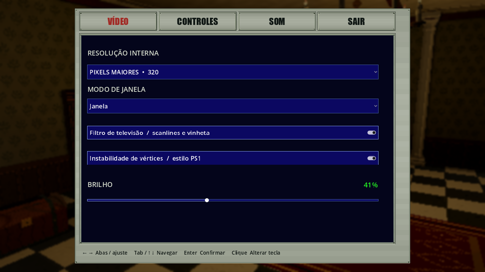

BOT coop · áudio, movimento e janela · 15/10/2026
Estado posterior, etapa 4.1: controle e áudio pelo foco da janela. O launcher suporta um humano e até três BOTs, sem retorno por inatividade; clientes renderizados usam driver real, com áudio apenas no humano focado. Os demais ficam mudos, com preferências isoladas. Dummy fica restrito aos BOTs headless. Métricas, comandos e capturas abaixo são históricos e preservam a rodada anterior de BOT sempre silencioso. Etapa 4.2: layout automático por quantidade de BOTs, seletor de monitor e modo Livre. O encaixe só ocorre na abertura; os comandos históricos abaixo agora usam Auto no launcher, sem reescrever suas evidências.
Ajustes entregues
- Todo áudio do processo do BOT é silenciado no Master antes da apresentação, incluindo música, ambiente, portas, passos e interface. Aplicar opções mantém esse mute. O launcher também usa driver Dummy somente no BOT. O humano mantém seu áudio, inclusive os sons do personagem BOT que ouviria na partida: eventos/SFX não foram retirados do mundo nem tiveram os volumes salvos zerados.
- Acompanhamento C1 usa look-ahead por segmentos caminháveis, sem soltar movimento em cada célula esperando o snapshot. Destino atualiza a cada três ticks, caminhada segue caminhada e corrida para alcançar o líder tem histerese. Curvas reduzem avanço gradualmente. Portas, perigo, líder parado e bloqueios ainda justificam parar; não há promessa de movimento contínuo em todo cenário.
- Configurações → VÍDEO → MODO DE JANELA oferece exatamente Tela cheia e Janela, aplicadas ao vivo e salvas por Esc/SAIR. Janela é redimensionável; Tela cheia mantém o modo exclusivo anterior. Resolução interna 640/320, CRT, vértices e brilho continuam separados do modo de janela.
- O launcher inicia humano e BOT em Janela. Use o encaixe do Windows para colocar lado a lado ou em quadrantes. Sem mosaico automático nem mais BOTs nesta entrega; essa ampliação continua na C4 do roadmap.
Preservados: alcance 0,65/±60°, dano autoritativo, colisões/velocidades, protocolo 2, schema 3, kits e coleta. C0 continua neutro e smoke legado mantém navegação anterior. Sem assets/SFX novos ou implementação C2.
Executar e preferências
powershell.exe -NoProfile -ExecutionPolicy Bypass -File .\Tools\Launch-CoopBot.ps1
Mesmos argumentos do guia: Jill humana/Chris BOT C1 por padrão, C0 opcional, dedicado, headless e semente. Feche a janela humana para encerrar a rodada. A abertura normal não ativa BOTs nem é silenciada; sem preferência salva, continua em tela cheia.
GameOptions.Fullscreen é aditivo, padrão true em arquivos antigos; os demais
valores são preservados, sem mudar campanha/schema. No teste, opções são herdadas
do arquivo normal inicialmente e gravadas separadamente em
user://coop-bot-tests/<sessão>/settings/<papel>-<personagem>.json. Ambos começam
em Janela mesmo herdando Tela cheia; o humano pode mudar depois pela UI.
Não grava sobre user://settings.json normal. O destino é configuração local
não serializada; volumes não são zerados/salvos para simular mute.
Implementação
GameOptions aplica Window.Mode; SettingsPanel oferece o seletor azul.
App aplica mudanças de UI depois do callback do popup nativo. O launcher passa
--windowed aos clientes visuais e --audio-driver Dummy só ao BOT.
App também aplica Master mute em comandos diretos --coop-bot. Ao liberar App
em fixtures, restaura o mute anterior. Processos não compartilham o mixer.
Logs COOP_TEST presentation registram modo, driver, mute e redimensionamento.
Só CoopCompanionController ativa SmokeBotNavigation(smooth:true). Look-ahead
testa o raio caminhável em todo o segmento, não só visada visual, e não avança
índice de rota pela previsão não confirmada. Inputs tanque e comandos ENet
continuam normais; não há teleporte, alteração de colisão ou autoridade extra.
Evidências locais
Windows x64, Godot 4.7.2 .NET Compatibility, SDK .NET 8.0.425. Árvore dirty
anterior de C0/C1, alcance/baú e estaturas preservada, sem commit/push.
Versão 0.2.0-alpha sobre HEAD 79eeef35d26221a76c9ff75e3c3e33da91ec8c37.
| Check | Evidência |
|---|---|
| Reprodução anterior | Build/coop-polish-before.log: 84 inputs neutros em 180 frames retilíneos; teste falhou como o sintoma relatado |
| Core após correção | Build/coop-polish-core.log: 117 aprovados; mesmo cenário a 10 Hz com inputs pendentes: zero pausas em 180 frames, distância final 2,52; percurso/combate C1 e smoke sob atraso sintético preservados |
| Build/import/Python | Build/coop-polish-{build,import,validator}.log: aprovados, compilação sem avisos/erros |
| UI real | Build/coop-polish-video-fixed.log: 242 checks solo/host/cliente ENet, mouse/teclado, Janela → Tela cheia → Janela, sete preferências, arquivo antigo e simulação online ativa |
| UI final, com pixels | Build/coop-polish-video-final-all-fields.log: 248 checks aprovados; seletor visível/enquadrado e os quatro campos azuis conferidos no mesmo frame salvo em PNG, em solo/host/cliente. Capturas finais revisadas, incluindo o título FILTROS integrado em paralelo |
| Regressão completa | Build/validation/20261015-195648-f97a6214/report.json: 11 estágios aprovados, incluindo Python, 22 PowerShell, 3 testes de logs, 117 CoreTests, build/import, smoke de quatro clientes por 35 s, 53 ENet, 33 C0 e 13 C1 headless. O hash de baú pendente na rodada C1 histórica já não bloqueou esta execução |
| BOT renderizado | Build/coop-polish-render.log: 27 checks aprovados; Master mudo ao criar/reaplicar opções, Janela redimensionável, destino de opções isolado, percurso/combate real no Doghall, sem coleta, reconexão sem kit e restore |
| Launcher real | Sessão 3f77103e7ba9, C1/seed42/8 s, exit 0. Humano: Windowed, redimensionável, Master não mudo, WASAPI. BOT: Windowed, redimensionável, Master mudo, Dummy. Hash do arquivo normal de preferências inalterado antes/depois; logs em Build/coop-bot-tests/3f77103e7ba9/ |

Revisão posterior: o painel atual inclui FILTROS acima das duas opções visuais; consulte Controles. A captura acima preserva esta rodada.
A imagem anterior está preservada no histórico do manifesto.
Tools/build_public_galleries.py --refresh-window-mode atualiza só essa vista,
hashes e acervo usando a fixture abaixo (perfil/campanha de teste):
& $env:GODOT_DOTNET --path . res://Tools/PauseMenuAcceptance.tscn -- --offline --new --character jill --profile polish-video --campaign polish-video --window-suite
Tentativas intermediárias preservadas: a primeira invocação omitiu --offline
e não iniciou a campanha; outra usou Home no popup nativo sem selecionar a
entrada desejada e falhou, com crash do engine no encerramento. O teste usa
setas e confere foco; aplicação de opções foi deferida para fora do callback.
A rodada posterior passou sem erros/crash. Nenhuma opção de teste foi removida
para esconder a falha.
A visualização repetida de um mesmo caminho de PNG mostrou uma prévia antiga sem os campos. Conferência dos pixels RGBA em disco e cópia binária com nome novo confirmaram o painel completo. A fixture passou a conferir os quatro campos e salvar a mesma imagem verificada. Uma hipótese de invalidar globalmente o desenho da janela foi descartada e essa alteração desnecessária foi removida; a rodada final acima passa sem ela. A revisão paralela do título FILTROS e sua fonte/gerador/captura pública foram preservados.
Métricas de continuidade são do cenário dirigido, não de todos os percursos. Sem homologação de naturalidade subjetiva, controles físicos, audição crítica, quatro clientes renderizados em mosaico, LAN/Internet ou desempenho.